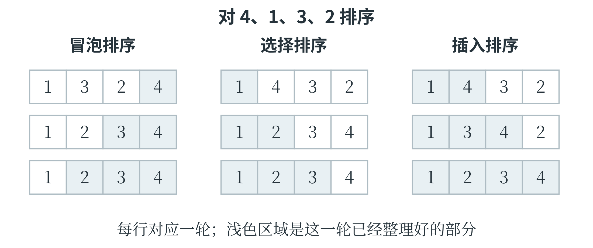
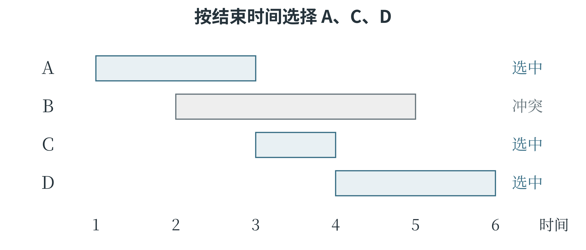

4.3 排序与贪心
排序中的位置与比较
排序是按某种比较规则重新安排元素顺序。按叶长从小到大排序，比较的是长度；按“类别优先、同类再比长度”排序，就要先比较类别，再处理相同类别中的先后。若两条记录的排序依据相同，排序后仍保留它们原先的相对顺序，这种性质称为稳定性。Python 的 sorted 和列表的 sort 是稳定排序，前者返回新列表，后者修改原列表。
冒泡排序反复比较相邻元素，前者较大就交换。对 [4, 1, 3, 2] 做第一轮比较，4 先与 1 交换，再与 3、2 交换，结果为 [1, 3, 2, 4]。最大的数已经到末尾，下一轮只需处理前三个数。每一轮确定一个末尾位置，剩余范围逐渐缩小。
def bubble_sort(values):
a = values.copy()
for end in range(len(a) - 1, 0, -1):
changed = False
for i in range(end):
if a[i] > a[i + 1]:
a[i], a[i + 1] = a[i + 1], a[i]
changed = True
if not changed:
break
return a
end 是当前尚需检查范围的最右位置。内层 range(end) 最后取到 end - 1，与其右侧的 end 比较，恰好不会越界。若整轮没有交换，说明相邻元素已经顺序正确，可以提前结束。这里只在严格大于时交换，相等元素不会互相跨越，所以这种冒泡写法保持稳定性。
选择排序换一种思路：在剩余范围内找到最小元素，把它放到该范围最前面。第一次确定索引 0 的元素，第二次确定索引 1，依此类推。它每轮只在最后交换一次，但寻找最小值仍要逐个比较。
def selection_sort(values):
a = values.copy()
for start in range(len(a) - 1):
smallest = start
for i in range(start + 1, len(a)):
if a[i] < a[smallest]:
smallest = i
a[start], a[smallest] = a[smallest], a[start]
return a
变量 smallest 保存的是位置，比较时才通过 a[smallest] 取出数值。这个位置和最小数值容易在补全程序时混淆。选择排序中的远距离交换还可能改变相等记录的先后，因此这种常见写法不稳定。
插入排序则始终保留一段已经排好序的前缀，再把后面的元素逐个插入其中。前缀为 [1, 4]、下一个数为 3 时，先将 4 向右移动，留下空位，再放入 3，得到 [1, 3, 4]。这个过程与整理手中一叠有编号的卡片相似：已有卡片顺序正确，只需要给新卡片找到位置。
def insertion_sort(values):
a = values.copy()
for i in range(1, len(a)):
value = a[i]
j = i - 1
while j >= 0 and a[j] > value:
a[j + 1] = a[j]
j -= 1
a[j + 1] = value
return a
value 暂存待插入的元素，避免右移时将它覆盖。循环结束后，j 可能指向一个不大于 value 的元素，也可能变成 -1；两种情况下，正确插入位置都是 j + 1。这里同样只移动严格较大的元素，因此稳定。
对照同一组数观察三种排序
排序算法可以用同一组数来比较，但应区分“检查了哪些位置”和“本轮确定了哪个位置”。对 [4, 1, 3, 2]，冒泡排序第一轮把最大值 4 推到最右端；选择排序第一轮把最小值 1 放到最左端；插入排序第一轮把前两项整理为 [1, 4]，随后再把 3、2 依次放入已排序部分。图 4-3 用色块标出每一步已经确定的部分。

插入排序中，元素的移动尤其值得分步看。当前列表为 [1, 4, 3, 2]，准备插入 3，先把它保存到 value。比较 4 与 3，发现 4 较大，就将 4 复制到右侧位置，列表暂时成为 [1, 4, 4, 2]。这个中间状态里出现了两个 4，但 3 没有丢失，因为它还保存在 value 中。再比较左侧的 1，发现不必继续移动，于是把 3 放入空出的位置，得到 [1, 3, 4, 2]。
因此，检查中间结果时，还要看看变量里存着什么，不能只看列表。
选择排序中的稳定性，也可以用带名字的记录观察。设两条长度同为 2 的记录分别记作 2甲、2乙，初始顺序为 [2甲, 2乙, 1]。第一轮找到末尾的 1，与开头的 2甲 交换，结果为 [1, 2乙, 2甲]。两个长度为 2 的记录改变了相对顺序，所以这种交换写法不稳定。如果只是排一串纯数字，差别可能看不出来；若每个数后面还关联着采集时间或编号，差别就会影响后续处理。
排序程序中的复制也有明确用途。本章几种函数开头的 values.copy() 保留了调用者的原列表，算法在副本上移动元素，最后返回结果。若去掉复制而直接操作原列表，排序步骤本身可能仍然正确，但函数对外部数据的影响改变了。阅读代码时，既要看排序结果，也要看它承诺修改哪一份数据。
分成小组再排序
快速排序先选一个元素作为基准，按大小将元素分组，再对较小组和较大组分别排序。这体现了分治思想：把问题分成更小的同类问题，分别求解，再合成结果。第二章的递归函数可以直接表达这个过程。
def quick_sort(values):
if len(values) <= 1:
return values.copy()
pivot = values[len(values) // 2]
smaller = [x for x in values if x < pivot]
equal = [x for x in values if x == pivot]
larger = [x for x in values if x > pivot]
return quick_sort(smaller) + equal + quick_sort(larger)
对 [4, 1, 3, 2]，基准是 3，三组分别为 [1, 2]、[3]、[4]；较小组继续排序后再拼接，得到 [1, 2, 3, 4]。相等组不再递归，否则大量相等元素可能让问题规模无法缩小。这份代码用新列表突出分组思想，理解起来直接，但会分配额外空间；常见的原地快速排序则在原列表中交换元素，具体写法不同。
冒泡、选择和插入排序最坏情况下的比较或移动次数通常按 \(n^2\) 增长。快速排序若各次分组较均衡，通常具有 \(O(n\log n)\) 的时间复杂度；分组极不均衡时，仍可能达到 \(O(n^2)\)。选择列表中间位置的元素，并不保证选中了数值大小居中的元素。
贪心选择何时成立
贪心算法在每一步按某个规则选择当前看来最有利的方案，通常不回头更改已经作出的选择。例如，一台设备同一时间只能进行一个实验，若希望在一天内完成尽量多的实验，一种方法是每次选择结束最早、又不与已选实验冲突的实验。提前结束，为后面的实验留下更多时间。这里的目标是实验数量，不是实验总时长或收益。设几个实验的起止时间分别为 A：1—3，B：2—5，C：3—4，D：4—6。允许前一个结束的时刻与后一个开始的时刻相同。按结束时间选择，先选 A，再选 C，最后选 D，可以完成三个；如果先选耗时较长的 B，就会挡住 A 和 C。算法需要先按结束时间排序，再依次检查开始时间是否不早于上一个已选实验的结束时间。
这种选择有理由成立：在任意一个完成数量最多的方案中，把第一个实验换成所有候选中结束最早的实验，后面的可用时间不会减少，因此不会使已经能够安排的后续实验失去位置。做完第一次选择，剩下的又是同类问题。这说明了局部选择怎样与整体目标相容，而不只是展示一组碰巧成功的数据。
贪心也会失败。用面值 1、3、4 的硬币凑出 6，每次取不超过剩余金额的最大面值，会得到 4、1、1，共三枚；取 3、3 只需两枚。“当前尽量多取”没有保证“最终枚数最少”。分析贪心策略时，需要同时写清可选动作、选择依据、剩余问题和最终目标；寻找一个反例，就能推翻“它总能得到最优结果”的判断；若要确认它一直有效，则需要说明每一步选择为什么不会妨碍整体目标。
取棋子的游戏也能说明，眼前拿得多，未必最后能获胜。两人轮流从 10 枚棋子中取走 1 枚或 2 枚，取走最后一枚的人获胜。先手先取 1 枚，留下 9 枚；以后对手取 1 枚，就取 2 枚，对手取 2 枚，就取 1 枚。每两次合计取走 3 枚，便能依次留下 6、3、0 枚，最后一枚由先手取走。这里有效的是保持“给对手留下 3 的倍数”这一状态规律，而不是每次取最多。规则若改成不能取最后一枚，原策略也必须重新分析。
将实验安排写成程序
“先选结束最早的实验”需要落实为明确的排序规则。把每个实验写成“名称、开始时间、结束时间”的元组，按第三项排序；随后依次检查，开始时间不早于上一个选中实验的结束时间，就可以加入安排。
experiments = [("A", 1, 3), ("B", 2, 5),
("C", 3, 4), ("D", 4, 6)]
ordered = sorted(experiments, key=lambda item: item[2])
chosen = []
last_end = 0
for name, start, end in ordered:
if start >= last_end:
chosen.append(name)
last_end = end
print(chosen) # ['A', 'C', 'D']
本例所有实验都在时间 0 以后开始，所以 last_end 从 0 起即可。排序结果为 A、C、B、D：选 A 后空闲时间从 3 开始，C 恰好在 3 开始，可以接上；B 在 2 开始，与已经选中的实验冲突，因而跳过；D 在 4 开始，可以接在 C 后面。图 4-4 把区间放在同一条时间轴上，冲突与衔接便一目了然。

如果要求改为“总收益最大”，这个算法就未必适用。假设 B 的收益为 100，A、C、D 的收益各为 1，选择三个实验只得到收益 3，选择 B 却能得到 100。目标变化之后，原来的正确理由不再支持新任务。算法题中看似只是替换了一个词，实际可能已经改变需要优化的量。
用小状态检查博弈策略
取棋子的规则也可以从最小情况倒着分析。轮到某人时只剩 1 枚或 2 枚，他可以一次取完而获胜；剩 3 枚时，无论取 1 枚还是 2 枚，都会把能立即获胜的局面交给对方。于是，3 枚是当前行动者的不利状态。剩 4 枚时可以取 1 枚留下 3，剩 5 枚时可以取 2 枚留下 3，因而两者又成为有利状态。沿着相同方法继续，剩 6 枚时的两种选择都会进入对方的有利状态，6 再次是不利状态。由此可以发现 3、6、9 这样的规律，并解释前面从 10 枚开始的策略。
要确认这条规律一直成立，还需要说明：每个 3 的倍数只能走向非倍数，而每个非倍数都能通过取 1 或 2 变为 3 的倍数。状态及其允许的后继，正是接下来用树和图搜索时要保存的信息。